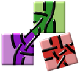

GroundForge
Choose patterns and stitches to generate diagrams for variations of bobbin lace grounds.
The primary purpose of the diagrams is selecting interesting patterns
from a myriad of choices and combinations.
Giving different colors to threads reveals how they flow through a pattern.
Exact pin positions and how threads are tensioned around them are left to your imagination.
Get started
- Easy patterns:
-
Select one of the 376 patterns from the gallery.
The choose stitches link on the tooltips returns you further down on this page,
select stitches at step one and show it.
- More patterns:
-
Use a link from the stitches section below, show step one and two
to uncover a traditional pattern and create your own variations.
- Advanced pattern creation:
-
The
user guide explains how to recognize and recreate existing patterns.
Hints
- Diagram size:
-
For larger diagrams in the sense of more stitches,
increase rows and columns in the parameters form.
- Footsides:
-
To try another foot side, change the value of shift left in the parameters form.
The algorithm however is limited and may produce bugs for some values in some patterns.
- Warning:
-
With complex stitches and large numbers of rows and columns,
your browser can get overwhelmed at step two or three.